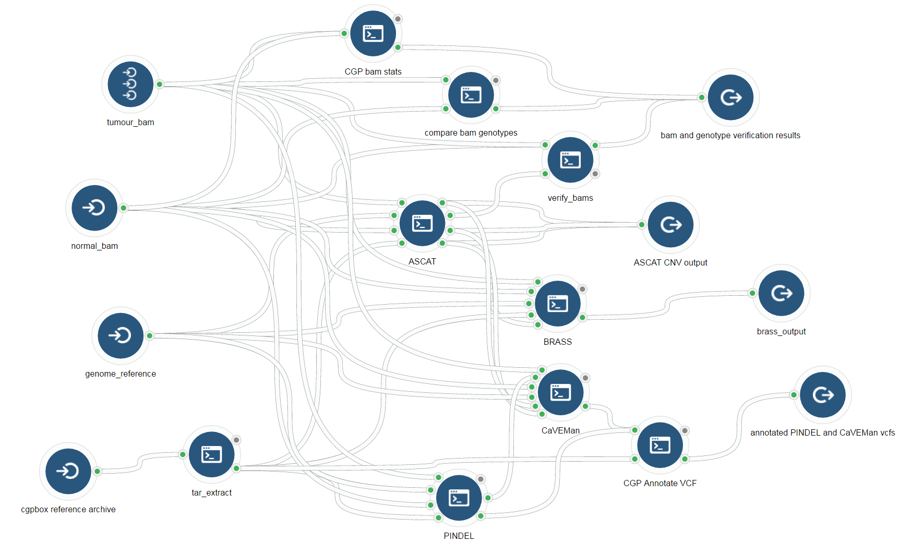

https://github.com/cancerit/cgpbox
This is a repackaging of the cgpbox pipeline to allow for parellization via the rabix executor and descriptions of the tools included by commmon workflow language.

Generates useful stats on the wildtype and mutant tumour bams that will be used in the pipeline.
bam_stats -i $BAM_MT_TMP -o $BAM_MT_TMP.basThe docker conatiner is
cgrlab/cgpbox_dev:develop
inputs = list(
input(id = "bam", label = "bam", description = "either wildtype or tumour bam", type = "File", secondaryFiles = list(".bai"), prefix = "-i")
)arguments = (CCBList(
CommandLineBinding(position = 2, prefix = "-o", valueFrom = list("{return $job.inputs.bam.name + \".bas\"}")),
CommandLineBinding(position = 3, valueFrom = list("\"&& ls -lR \""))
))outputs = list(
output(id = "std_out", label = "std_out",
description = "standard output", type = "File...",
metadata = list(org = "cgp"),
glob ="\"std.out\""),
output(id = "bam_statistics", label = "bam stat output",
description = "bam stat output", type = "File",
inheritMetadataFrom = "#bam", metadata = list(org = "cgp"),
glob = Expression(engine = "#cwl-js-engine",
script = "\"*.bas\""))
)tool <- Tool(
id = "bam-stats",
label = "CGP bam stats",
hints = requirements(docker(pull = "cgrlab/cgpbox_dev:develop"), cpu(1), mem(1000)),
baseCommand = "bam_stats",
stdout = "std.out",
inputs = inputs,
arguments = arguments,
outputs = outputs)project$app_add("bam-stats", tool)
compareBamGenotypes.pl \
-o /datastore/output/$NAME_WT/genotyped \
-nb $BAM_WT_TMP \
-j /datastore/output/$NAME_WT/genotyped/result.json \
-tb $BAM_MT_TMP \The docker conatiner is
cgrlab/cgpbox_dev:develop
inputs = list(
input(id = "normal_bam", label = "normal_bam", description = "normal wildtype bam", type = "File", prefix = "-nb", stageInput = "link", secondaryFiles = list(".bai")),
input(id = "tumour_bam", label = "tumour_bam", description = "mutant tumour bam", type = "File", prefix = "-tb", stageInput = "link", secondaryFiles = list(".bai"))
)arguments = CCBList(CommandLineBinding(position = 99, valueFrom = list("\"&& ls -lR\"")))outputs = list(
output(id = "std_out", label = "std_out",
description = "standard output", type = "File...",
metadata = list(org = "cgp"),
glob = "\"std.out\""),
output(id = "genotype_comparison_results", label = "genotype comparison results",
description = "genotype comarison results", type = "File",
inheritMetadataFrom = "#tumour_bam", metadata = list(org = "cgp"),
glob = Expression(engine = "#cwl-js-engine",
script = "\"genotype_check/*.json\""))
)tool <- Tool(
id = "genotype-check",
label = "compare bam genotypes",
hints = requirements(docker(pull = "cgrlab/cgpbox_dev:develop"), cpu(1), mem(1000)),
baseCommand = "compareBamGenotypes.pl -o genotype_check -j genotype_check/genotype_check_result.json",
stdout = "std.out",
inputs = inputs,
argument = arguments,
outputs = outputs)write(tool$toJSON(pretty = TRUE), "genotype_check.json")project$app_add("genotype-check", tool)
verifyBamHomChk.pl
-b [bam file]
-a [tumour only - from ASCAT tool - called copynumber.caveman.csv ]
-d 25
-o ./
-j result.jsonThe docker conatiner is
cgrlab/cgpbox_dev:develop
inputs = list(
input(id = "bam", label = "bam", description = "either normal wildtype or tumour mutatantbam", type = "File", prefix = "-b", secondaryFiles = list(".bai")),
input(id = "ascat_adjusted_copynumber_csv", label = "ascat_adjusted_copynumber_csv", description = "ascat adjusted for caveman copynumber csv", type = "File", valueFrom = list("{if ($job.inputs.bam.metadata.sample_type == \"Tumor\"){return $self.path;}}"), prefix = "-a")
)arguments = CCBList(CommandLineBinding(position = 99, valueFrom = list("\"&& ls -lR\"")))outputs = list(
output(id = "std_out", label = "std_out",
description = "standard output", type = "File...",
metadata = list(org = "cgp"),
glob = Expression(engine = "#cwl-js-engine",
script = "\"*.{out}\"")),
output(id = "verify_bam_result", label = "verify_bam_results",
description = "verify bam results", type = "File",
inheritMetadataFrom = "#bam", metadata = list(org = "cgp"),
glob = Expression(engine = "#cwl-js-engine",
script = "\"verify_bam/verify_bam_result.json\""))
)need to add some logic for -a adjusted copy number because it is only needed if it is the tumour sample.
-a /datastore/output/${NAME_MT}_vs_${NAME_WT}/ascat/${NAME_MT}.copynumber.caveman.csv
arguments = CCBList(CommandLineBinding(position = 2, prefix = "-a", valueFrom = list("\"if $self.metadata.sample_type = \"Tumor\" then \""))),
{if ($job.inputs.bam.metadata.sample_type == "Tumor") {command_line_arg = "ab.copynumber.caveman.csv";} else {command_line_arg = "";} return command_line_arg}
{if ($job.inputs.bam.metadata.sampleType == "Tumor") {command_line_arg = "ab.copynumber.caveman.csv";} else {command_line_arg = "";} return command_line_arg}
tool <- Tool(
id = "verify_bam",
label = "verify_bam",
hints = requirements(docker(pull = "cgrlab/cgpbox_dev:develop"), cpu(1), mem(1000)),
baseCommand = "verifyBamHomChk.pl -d 25 -o verify_bam -j verify_bam/verify_bam_result.json",
stdout = "std.out",
inputs = inputs, arguments = arguments, outputs = outputs)project$app_add("verify_bams", tool)Somatic copy number analysis using paired end wholegenome sequencing
https://github.com/cancerit/ascatNgs
ascat.pl
-t [tumour bam]
-n [normal wildtype bam]
-r [genome reference]
-c [cpu number]
-rs 'HUMAN'
-ra GRCh37
-pr WGS
-pl ILLUMINA
-sg ascat_SnpGcCorrections.tsv
-q 20
-g L
-o ./ascat_output
&& perl -ne '@F=(split q{,}, $_)[1,2,3,4]; $F[1]-1; print join("\t",@F)."\n";' < copynumber.caveman.csv > ./normal_cn.bed && perl -ne '@F=(split q{,}, $_)[1,2,3,6]; $F[1]-1; print join("\t",@F)."\n";' < copynumber.caveman.csv > ./tumour_cn.bed
The docker conatiner is
cgrlab/cgpbox_dev:develop
inputs = list(
input(id = "tumour_bam", label = "tumour_bam", description = "mutant tumour bam", type = "File", secondaryFiles = list(".bai"), prefix = "-t"),
input(id = "normal_bam", label = "normal_bam", description = "normal wildtype bam", type = "File", secondaryFiles = list(".bai"), prefix = "-n"),
input(id = "reference", label = "reference", description = "genome reference", type = "File", secondaryFiles = list(".fai"), prefix = "-r"),
input(id = "cgpbox_reference_files", label = "cgpbox_reference_files", description = "extracted reference files", type = "File...", stageInput = "link")
)arguments = CCBList(CommandLineBinding(position = 99, valueFrom = list("\"&& ls -lR\"")))outputs = list(
output(id = "std_out", label = "std_out",
description = "standard output", type = "File...",
metadata = list(org = "cgp"),
glob = "\"std.out\""),
output(id = "ascat_statistics", label = "ascat_statistics",
description = "ascat_statistics", type = "File...",
inheritMetadataFrom = "#normal_bam", metadata = list(org = "cgp"),
glob = Expression(engine = "#cwl-js-engine",
script = "\"ascat_output/*.samplestatistics.txt\"")),
output(id = "copynumber_caveman", label = "copynumber_caveman",
description = "copy_number_caveman", type = "File...",
inheritMetadataFrom = "#normal_bam", metadata = list(org = "cgp"),
glob = Expression(engine = "#cwl-js-engine",
script = "\"ascat_output/*copynumber.caveman.csv\""))
)prep_for_caveman_sh = fileDef(name = "prep_for_caveman.sh", content = read_file("prep_for_caveman.sh"))tool <- Tool(
id = "ASCAT",
label = "ASCAT",
hints = requirements(docker(pull = "cgrlab/cgpbox_dev:develop"), cpu(1), mem(1000)),
requirements = requirements(prep_for_caveman_sh),
baseCommand = "CPU=`grep -c ^processor /proc/cpuinfo` && ascat.pl -c $CPU -rs Human -ra NCBI37 -pr WGS -pl ILLUMINA -sg ascat_SnpGcCorrections.tsv -q 20 -g L -o ascat_output",
stdout = "std.out",
inputs = inputs,
arguments = arguments,
outputs = outputs)project$app_add("ASCAT", tool)Cancer Genome Project Insertion/Deletion detection pipeline based around Pindel
https://github.com/cancerit/cgpPindel
pindel.pl
-t [tumour mutant bam]
-n [normal wildtype bam]
-r [genome reference]
-c $CPU
-sp HUMAN
-as GRCh37
-st WGS
-e NC_007605,hs37d5,GL%
-s pindel_simpleRepeats.bed.gz
-f pindel_genomicRules.lst
-g pindel_human.GRCh37.indelCoding.bed.gz
-u pindel_pindel_np.gff3.gz
-sf pindel_softRules.lst
-b brass-ucscHiDepth_0.01_mrg1000_no_exon_coreChrs.bed.gz
-o ./pindel_outputThe docker conatiner is
cgrlab/cgpbox_dev:develop
inputs = list(
input(id = "tumour_bam", label = "tumour_bam", description = "tumour bam", type = "File", secondaryFiles = list(".bai"), prefix = "-t"),
input(id = "normal_bam", label = "normal_bam", description = "wildtype bam", type = "File", secondaryFiles = list(".bai"), prefix = "-n"),
input(id = "reference", label = "reference", description = "reference", type = "File", secondaryFiles = list(".fai"), prefix = "-r"),
input(id = "cgpbox_reference_files", label = "cgpbox_reference_files", description = "extracted reference files", type = "File...", stageInput = "link")
)arguments = CCBList(CommandLineBinding(position = 99, valueFrom = list("\"&& ls -lR\"")))outputs = list(
output(id = "std_out", label = "std_out",
description = "standard output", type = "File...",
metadata = list(org = "cgp"),
glob = "\"std.out\""),
output(id = "pindel_germline_bed", label = "pindel_germline_bed",
description = "pindel_germline_bed output", type = "File",
inheritMetadataFrom = "#tumour_bam", metadata = list(org = "cgp"),
glob = Expression(engine = "#cwl-js-engine",
script = "\"pindel_output/*.germline.bed\"")),
output(id = "pindel_flagged_vcf", label = "pindel_flagged_vcf",
description = "pindel_flagged_vcf", type = "File",
inheritMetadataFrom = "#tumour_bam", metadata = list(org = "cgp"),
glob = Expression(engine = "#cwl-js-engine",
script = "\"pindel_output/*.flagged.vcf.gz\""), secondaryFiles = list(".tbi"))
)tool <- Tool(
id = "pindel",
label = "pindel",
hints = requirements(docker(pull = "cgrlab/cgpbox_dev:develop"), cpu(1), mem(1000)),
baseCommand = "CPU=`grep -c ^processor /proc/cpuinfo` && pindel.pl -c $CPU -sp HUMAN -as GRCh37 -st WGS -e NC_007605,hs37d5,GL% -s pindel_simpleRepeats.bed.gz -f pindel_genomicRules.lst -g pindel_human.GRCh37.indelCoding.bed.gz -u pindel_pindel_np.gff3.gz -sf pindel_softRules.lst -b brass-ucscHiDepth_0.01_mrg1000_no_exon_coreChrs.bed.gz -o pindel_output",
stdout = "std.out",
inputs = inputs,
arguments = arguments,
outputs = outputs)project$app_add("pindel", tool)CaVEMan actually needs the reference index and not the reference (?). But we can attach the reference index as a secondary file to the reference and find the path that way. Need to ask Erik about this.
It uses outputs from Pindel and ASCAT.
caveman.pl
-tb [tumour mutant bam]
-nb [normal wildtype bam]
-r [genome reference index - genome.fa.fai]
-in [pindel .germline.bed]
-tc [tum.cn.bed - from ASCAT]
-nc [norm.cn.bed - from ASCAT]
-t $CPU
-s HUMAN
-sa GRCh37
-st WGS
-st genomic
-ig caveman_ucscHiDepth_0.01_merge1000_no_exon.tsv
-b ./
-u ./
-o caveman_outputThe docker conatiner is
cgrlab/cgpbox_dev:develop
inputs = list(
input(id = "tumour_bam", label = "tumour_bam", description = "mutant tumour bam", type = "File", secondaryFiles = list(".bai"), prefix = "-tb"),
input(id = "normal_bam", label = "normal_bam", description = "normal wildtype bam", type = "File", secondaryFiles = list(".bai"), prefix = "-nb"),
input(id = "genome_reference", label = "genome_reference", description = "genome_reference", type = "File", secondaryFiles = list(".fai"), valueFrom = list("$self.path+\".fai\""), prefix = "-r"),
input(id = "pindel_germline_bed", label = "pindel_germline_bed", description = "pindel_germline_bed", type = "File", prefix = "-in"),
input(id = "ascat_tumour_cn_bed", label = "ascat_tumour_cn_bed", description = "ascat_tumour_cn_bed", type = "File", prefix = "-tc"),
input(id = "ascat_normal_cn_bed", label = "ascat_normal_cn_bed", description = "ascat_normal_cn_bed", type = "File", prefix = "-nc"),
input(id = "cgpbox_reference_files", label = "cgpbox_reference_files", description = "extracted reference files", type = "File...", stageInput = "link")
)arguments = CCBList(CommandLineBinding(position = 99, valueFrom = list("\"&& ls -lR\"")))outputs = list(
output(id = "std_out", label = "std_out",
description = "standard output", type = "File",
metadata = list(org = "cgp"),
glob = "\"std.out\""),
output(id = "caveman_snv_bed", label = "caveman_snv_bed",
description = "caveman_snv_bed", type = "File...",
inheritMetadataFrom = "#normal_bam", metadata = list(org = "cgp"),
glob = Expression(engine = "#cwl-js-engine",
script = "\"caveman_output/*bed\"")),
output(id = "caveman_all_vcf", label = "caveman_all_vcf",
description = "caveman_all_vcf", type = "File...",
inheritMetadataFrom = "#normal_bam", metadata = list(org = "cgp"),
glob = Expression(engine = "#cwl-js-engine",
script = "\"caveman_output/*vcf.gz\""), secondaryFiles = list(".tbi")),
output(id = "caveman_flagged_muts_vcf", label = "caveman_flagged_muts_vcf",
description = "caveman_flagged_muts_vcf", type = "File",
inheritMetadataFrom = "#normal_bam", metadata = list(org = "cgp"),
glob = Expression(engine = "#cwl-js-engine",
script ="\"caveman_output/*flagged.muts.vcf.gz\""), secondaryFiles = list(".tbi"))
)tool <- Tool(
id = "CaVEMan",
label = "CaVEMan",
hints = requirements(docker(pull = "cgrlab/cgpbox_dev:develop"), mem(1000)),
baseCommand = "CPU=`grep -c ^processor /proc/cpuinfo` && caveman.pl -t $CPU -s HUMAN -sa GRCh37 -st WGS -st genomic -ig caveman_ucscHiDepth_0.01_merge1000_no_exon.tsv -b ./ -u ./ -o caveman_output",
stdout = "std.out",
inputs = inputs,
arguments = arguments,
outputs = outputs)project$app_add("CaVEMan", tool)needs these 3 inputs from other tools
-in /datastore/output/${NAME_MT}_vs_${NAME_WT}/pindel/${NAME_MT}_vs_${NAME_WT}.germline.bed \
-tc $TMP/tum.cn.bed \
-nc $TMP/norm.cn.bed \Prep ASCAT for caveman
echo -e "CaVEMan prep: `date`"
set -x
ASCAT_CN="/datastore/output/${NAME_MT}_vs_${NAME_WT}/ascat/$NAME_MT.copynumber.caveman.csv"
perl -ne '@F=(split q{,}, $_)[1,2,3,4]; $F[1]-1; print join("\t",@F)."\n";' < $ASCAT_CN > $TMP/norm.cn.bed
perl -ne '@F=(split q{,}, $_)[1,2,3,6]; $F[1]-1; print join("\t",@F)."\n";' < $ASCAT_CN > $TMP/tum.cn.bed
set +x
Breakpoints via assembly - Identifies breaks and attempts to assemble rearrangements.
https://github.com/cancerit/BRASS
brass.pl
-t [tumour bam]
-n [normal wildtype bam]
-g [genome reference]
-ss [ascat *.samplestatistics.txt array]
-j 4
-k 4
-c $CPU
-s HUMAN
-as GRCh37
-pr WGS
-pl ILLUMINA
-d brass-ucscHiDepth_0.01_mrg1000_no_exon_coreChrs.bed.gz
-f brass-brass_np.groups.gz
-g_cache vagrent_Homo_sapiens.GRCh37.75.vagrent.cache.gz
-vi brass-viral.1.1.genomic.fa
-mi brass-all_ncbi_bacteria.20150703
-b brass-hs37d5_500bp_windows.gc.bed.gz
-ct brass-Human.GRCh37.CentTelo.tsv
-o ./brass_outputThe docker conatiner is
cgrlab/cgpbox_dev:develop
Need to add more inputs here.
inputs = list(
input(id = "tumour_bam", label = "tumour_bam", description = "tumour bam", type = "File", stageInput = "link", secondaryFiles = list(".bai"), valueFrom = list("{return $self.name}"), prefix = "-t"),
input(id = "normal_bam", label = "normal_bam", description = "wildtype bam", type = "File", stageInput = "link", secondaryFiles = list(".bai"), valueFrom = list("{return $self.name}"), prefix = "-n"),
input(id = "genome_reference", label = "genome_reference", description = "genome_reference", type = "File", secondaryFiles = list(".fai"), prefix = "-g"),
input(id = "bam_stats", label = "bam_stats", description = "bam stats", type = "File...", stageInput = "link"),
input(id = "ascat_sample_statistics", label = "ascat_sample_statistics", description = "ascat_sample_statistics", type = "File...", prefix = "-ss"),
input(id = "cgpbox_reference_files", label = "cgpbox_reference_files", description = "extracted reference files", type = "File...", stageInput = "link")
)arguments = CCBList(CommandLineBinding(position = 99, valueFrom = list("\"&& ls -lR\"")))outputs = list(
output(id = "std_out", label = "std_out",
description = "standard output", type = "File...",
metadata = list(org = "cgp"),
glob = "\"std.out\""),
output(id = "brass_sv_bedpe", label = "brass_sv_bedpe",
description = "brass_sv_bedpe", type = "File",
inheritMetadataFrom = "#normal_bam", metadata = list(org = "cgp"),
glob = Expression(engine = "#cwl-js-engine",
script = "\"brass_output/*bedpe.gz\""), secondaryFiles = list(".tbi")),
output(id = "brass_vcf", label = "brass_vcf",
description = "brass_vcf", type = "File...",
inheritMetadataFrom = "#normal_bam", metadata = list(org = "cgp"),
glob = Expression(engine = "#cwl-js-engine",
script = "\"brass_output/*vcf*\""))
)tool <- Tool(
id = "BRASS",
label = "BRASS",
hints = requirements(docker(pull = "cgrlab/cgpbox_dev:develop"), cpu(1), mem(1000)),
baseCommand = "CPU=`grep -c ^processor /proc/cpuinfo` && brass.pl -j 4 -k 4 -c $CPU -s HUMAN -as GRCh37 -pr WGS -pl ILLUMINA -d brass-ucscHiDepth_0.01_mrg1000_no_exon_coreChrs.bed.gz -f brass-brass_np.groups.gz -g_cache vagrent_Homo_sapiens.GRCh37.75.vagrent.cache.gz -vi brass-viral.1.1.genomic.fa -mi brass-all_ncbi_bacteria.20150703 -b brass-hs37d5_500bp_windows.gc.bed.gz -ct brass-Human.GRCh37.CentTelo.tsv -o ./brass_output",
stdout = "std.out", inputs = inputs, arguments = arguments, outputs = outputs)project$app_add("BRASS", tool)CGP Annotate
AnnotateVcf.pl
-i [VCF input from pindel or caveman]
-c vagrent_Homo_sapiens.GRCh37.75.vagrent.cache.gz
-o annotated.muts.vcfThe docker conatiner is
cgrlab/cgpbox_dev:develop
inputs = list(
input(id = "vcf", label = "vcf", description = "vcf prep annotation", type = "File", secondaryFiles = list(".tbi"), prefix = "-i"),
input(id = "cgpbox_reference_files", label = "cgpbox_reference_files", description = "extracted reference files", type = "File...", stageInput = "link")
)arguments = arguments = CCBList(CommandLineBinding(position = 99, valueFrom = list("\"&& ls -lR\"")))outputs = list(
output(id = "std_out", label = "std_out",
description = "standard output", type = "File...",
metadata = list(org = "cgp"),
glob = "\"std.out\""),
output(id = "annotated_vcf", label = "annotated_vcf",
description = "annotated vcf", type = "File",
inheritMetadataFrom = "#vcf", metadata = list(org = "cgp"),
glob = "\"*vcf*\"")
)tool <- Tool(
id = "cgp_annotate_vcf",
label = "CGP Annotate VCFs",
hints = requirements(docker(pull = "cgrlab/cgpbox_dev:develop"), cpu(1), mem(1000)),
baseCommand = "AnnotateVcf.pl -c vagrent_Homo_sapiens.GRCh37.75.vagrent.cache.gz -o annotated.muts.vcf",
stdout = "std.out",
inputs = inputs,
arguments = arguments,
outputs = outputs)write(tool$toJSON(pretty = TRUE), "cgp_annotate_vcf.json")project$app_add("cgp_annotate_vcf", tool)
# annotate pindel
AnnotateVcf.pl
-t
-c $REF_BASE/vagrent/vagrent.cache.gz
-i /datastore/output/${NAME_MT}_vs_${NAME_WT}/pindel/${NAME_MT}_vs_${NAME_WT}.flagged.vcf.gz
-o /datastore/output/${NAME_MT}_vs_${NAME_WT}/pindel/${NAME_MT}_vs_${NAME_WT}.annot.vcf
# annotate caveman
AnnotateVcf.pl
-t
-c $REF_BASE/vagrent/vagrent.cache.gz \
-i /datastore/output/${NAME_MT}_vs_${NAME_WT}/caveman/${NAME_MT}_vs_${NAME_WT}.flagged.muts.vcf.gz
-o /datastore/output/${NAME_MT}_vs_${NAME_WT}/c.annot.muts.vcf